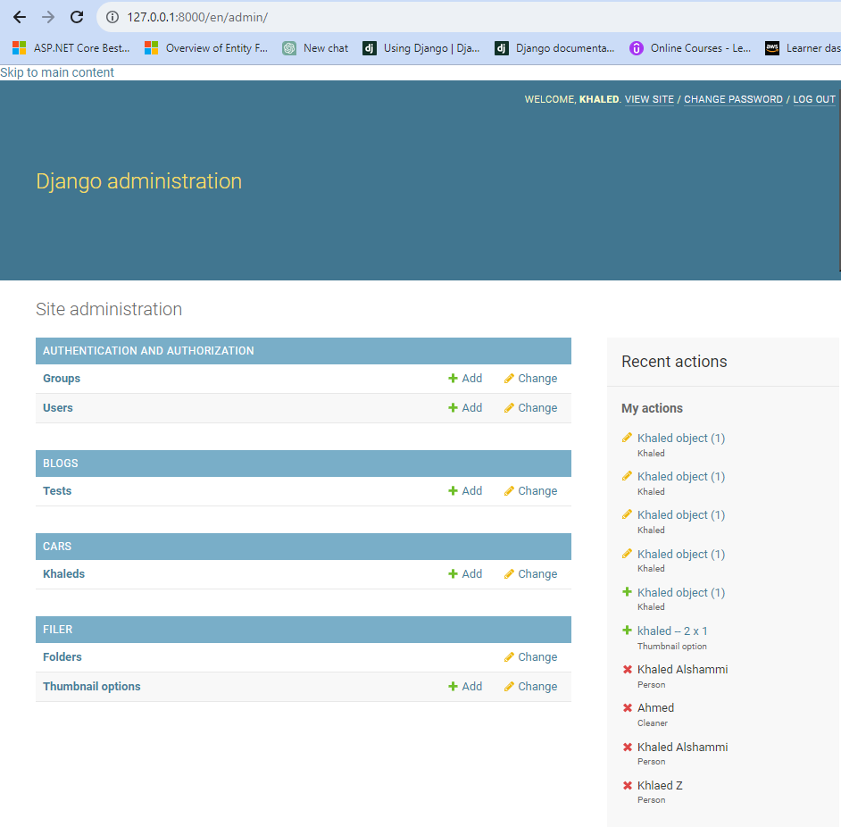
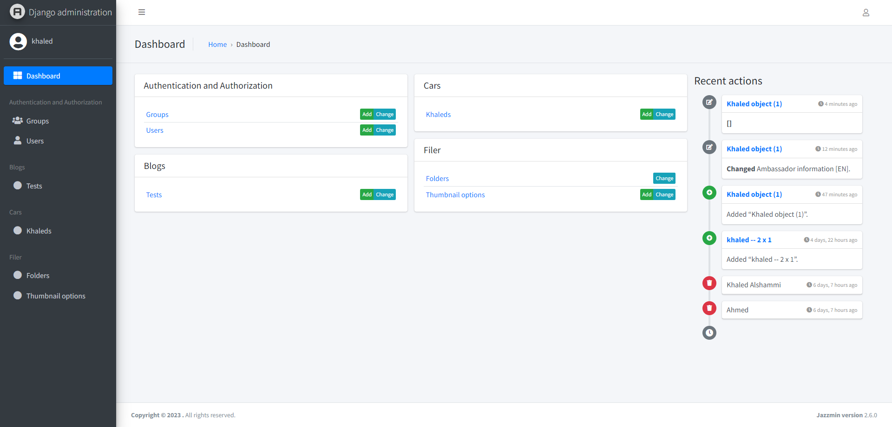

used to change admin layout.
install the package:
pip install django-jazzmin

insert the package into INSTALLED_APPS list:
INSTALLED_APPS = [
    'jazzmin',
    'django.contrib.admin',
    ...
]
Note: insert the package before admin package

before:

after:
